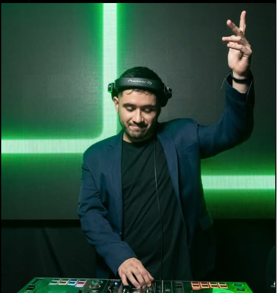

¡Bienvenidos al festival!
Del 15 al 17 de noviembre en Plaza Añoranza. Dos días de música, arte y cultura.
Artistas Destacados

Nestor Garnica
Con su inmemorable sonidos de violín

Dani Hoyos
Un poco de ruido en la escena guaracha

Maxi Medina
Lo mejor de la escena electrónica local
Géneros Musicales
- Folclore
- Rock
- Guaracha
- Electrónica